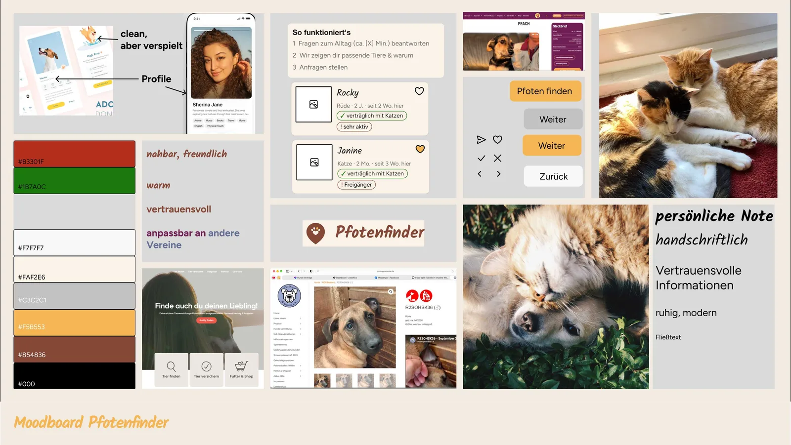

Case Study · Product Design Bootcamp
Pfotenfinder
Wie Menschen und Tierschutztiere zueinander finden, bevor allein das Herz entscheidet.


Kurz gesagt
Problem
Menschen verlieben sich in ein Foto und prüfen erst danach, ob das Tier zu ihrem Alltag passt. Passt es nicht, wird es zum Rückläufer.
Ansatz
Ein Matching direkt auf der Seite des Tierschutzvereins: erst Fragen zum eigenen Leben, dann passende Tiere mit Begründung.
Stand
Happy Path als klickbarer Mobil-Prototyp, Desktop in Arbeit. Als Nächstes: testen, ob Nutzer:innen der Vorauswahl vertrauen.
01 · Das Problem
Guter Wille reicht nicht.
Tierheime sind voll: Laut Deutschem Tierschutzbund haben nur 18 % noch Kapazitäten. Trotzdem kommen Tiere zurück, oft nach wenigen Tagen. Nicht, weil die Menschen es nicht ernst meinen, sondern weil Tier und Alltag nicht zusammenpassen.
Hilferufe wie dieser aus dem Umfeld von Ein Herz für Streuner e.V., wo ich mich ehrenamtlich engagiere, zeigen das deutlich. Genau dort setzt das Projekt an.
Kann jemand helfen? Amber wird nach einem Tag zum Rückläufer, weil die Adoptanten ihr keine Ruhe zum Ankommen geben.
02 · Research
Drei Quellen, eine Frage.
Ich habe drei Hypothesen aufgestellt und sie mit Interviews, einer Umfrage und Desk Research geprüft. Hypothesen sind für mich Werkzeuge, um Annahmen sichtbar und widerlegbar zu machen, keine Schlussfolgerungen.
Interviews
Drei Adoptierende in der Entscheidungsphase und eine Vermittlerin als Expertin
Umfrage-Antworten
Davon 64 Personen, die sich online über Tiere informiert haben
Erkenntnisse
Aus Interviews, Umfrage und Studien (u. a. Tierschutzbund, Graf 2025, RSPCA Queensland) zusammengeführt und geclustert
Hypothese 1: Die Wahl für ein Tier erfolgt primär emotional und optisch. Eignung wird erst nachträglich zur Rechtfertigung herangezogen.
bestätigtHypothese 2: Menschen können ihre eigenen Rahmenbedingungen nur unzureichend in konkrete Anforderungen an ein Tier übersetzen.
teilweise bestätigtHypothese 3: Menschen mit Tierschutzbezug kontaktieren deutlich eher ein Tierheim als eine Zucht.
bestätigt
03 · Erkenntnisse
Erst verlieben, dann nachdenken.
Emotionale Auswahl
Bilder entscheiden. Begründet wird später: „Sah so süß aus.“ „Ist ein Bauchgefühl.“ Das Verhalten im Tierschutz zählt mehr als Rasse oder Herkunft.
Unterschätzte Eignung
79,7 % halten Infos zur nötigen Eignung für relevant, aber nur 18,75 % sehen die eigene Eignung als mögliches Hemmnis.
„Ich mache wirklich ein Horrorszenario, wie es laufen kann, und die Leute sagen: Ja, ja, alles super. Kriegen wir hin.“
Vermittlerin im Interview
Klare Haltung zur Zucht
Die Zielgruppe ist vom Tierschutz überzeugt und lehnt Züchter kategorisch ab. Ein Muster, das erst in den Daten auftauchte, und ein möglicher Bias, den ich offen mitführe.
Kern-Insight
Es fehlt ein Passungscheck, bevor man sich emotional an ein Tier bindet.
04 · Segment & Persona
Für wen zuerst?
Drei Segmente, eine bewusste Wahl. Die Systematisch Suchenden haben den am besten belegten Pain Point und sind über einen Kanal erreichbar, dem sie schon vertrauen.
- Die Vernetzten ÜberzeugtenGrößter Teil der Zielgruppe, gut belegt, aber kaum Hebel
- Die Systematisch Suchenden · gewähltBestbelegter Pain Point und ein realistischer, vertrauter Interventionsort
- Die unentschlossenen Einsteiger:innenGroßer Impact möglich, aber kaum Belege
Jana-Sophie Meyer
etwa 28 · will einen Hund retten · sucht allein, ohne Netzwerk
Jana-Sophie braucht verlässliche, individuelle Infos zu Wesen, Gesundheit und ihrer eigenen Eignung, weil Standard-Beschreibungen ihr weder zeigen, wie sich das Tier zuhause verhält, noch ob sie den Anforderungen gerecht wird.
Was sie braucht
- Aktuelle, persönliche Infos auf einem vertrauten Kanal
- Konkrete, überprüfbare Angaben zu Gesundheit und Verträglichkeit
Was sie bremst
- Generische Beschreibungen ohne persönliche Einschätzung
- Zweifel an der Seriosität
- Unklare Vermittlungsbedingungen
05 · How might we
Wie können wir Jana-Sophie den Abgleich zwischen ihren Lebensumständen und den Bedürfnissen eines Tieres so früh wie möglich ermöglichen?
Die Frage dreht die gewohnte Reihenfolge um: erst Eignung, dann Fotos.
06 · Konzept
Kein weiteres Portal. Ein Matching, wo Vertrauen schon ist.
Aus drei Ideen (Matching, Berater, Blind Date) habe ich das Matching weiterverfolgt. Es läuft direkt auf der Website des Tierschutzvereins, denn ohne die Vereine geht es nicht. Das System übersetzt Alltag und Erfahrung in passende Tiere.
- Schritt 1Bedarf entstehtMatching öffnen
- Schritt 2Eignung prüfenFragen zum Alltag beantworten
- Schritt 3Optionen findenPassende Tiere samt Begründung sehen
- Schritt 4Auswahl treffenProfile ansehen, Tier auswählen
- Schritt 5Anfrage stellenAnfrage an den Verein senden
Riskanteste Annahme
Nutzer:innen vertrauen der Vorauswahl und sind damit zufrieden.
Erfolg messen
- Anteil der Anfragen, die über das Matching kommen
- Anteil positiver Google-Bewertungen seit Einführung
Responsible Design
- Aussagekräftige Alt-Texte für alle Tierbilder
- Sprache ohne emotionalen Druck, Fachbegriffe einfach erklärt
07 · Design
Warm, vertraulich, persönlich. Und anpassbar.
Pfotenfinder lebt auf den Seiten verschiedener Vereine, also muss die Gestaltung deren Farben aufnehmen können. Das Logo zeigt eine Pfote als Aussparung in einem Standort-Pin: ein Fundpunkt.

08 · Fazit & nächste Schritte
Was ich mitnehme.
Emotion ist keine Schwäche
Dass Menschen mit dem Herzen wählen, ist eine Randbedingung für das Design, kein Fehler, den man wegdesignt. Also kommt die Eignung einfach vor das Verlieben.
Widerlegt ist auch ein Ergebnis
Die Annahme, Informationen seien zu verstreut, hat die Umfrage nicht gestützt. Gut so: Sie hätte mich zum falschen Produkt geführt.
Als Nächstes
- Usability-Test: Ist der Fragebogen zu lang? Bleibt das Vertrauen?
- Kooperation mit Vereinen klären
- Das Matching testbar machen